本ごとの仕様
3本とも Remotion で作っています。詳しい仕様は spec.html にまとめています。
01グルメ紹介（20秒）
目的
店の雰囲気・価格・営業時間を一気に見せる
音声
ナレーションなし・BGM（Mixkit「Sicilian Cafe」）
カット
約2.8秒ごとに7カット。動画と写真を交互にし、各カットで1.05倍から1.15倍に寄る
書体
Zen Maru Gothic Black（丸ゴシック）
テロップの形
白い角丸の札（66px）と価格の緑の札（84px）、補足の札（44px）を左下にまとめる
動き
札がばねで大きくなりながら出る。カットごとに「ポン」の効果音を入れる
安全域
下から420pxより上に文字を置く
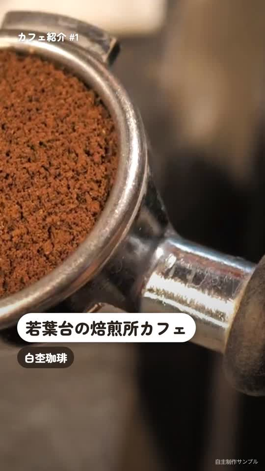

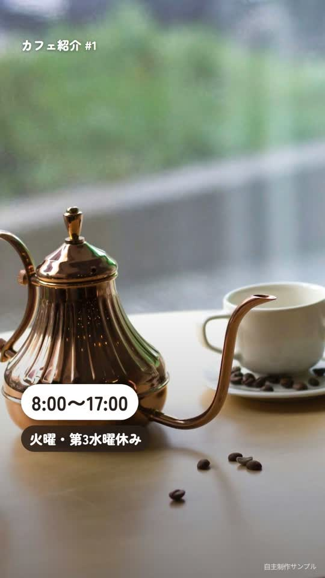
02ビジネスノウハウ（30秒）
目的
保存して見返してもらえる知識を1つ渡す
音声
ナレーション（Irodori-TTS）・BGM小さめ
カット
1文ごとに1カット（5カット）。背景はぼかした店の写真を32%の濃さで敷く
書体
M PLUS 1p ExtraBold
テロップの形
黒地に白の大きな文字（92px・1行9字）。強調語は黄色の地に黒文字で示し、文の中の行を順に出す
動き
行ごとに下から上がる。画面上に進行バー（黄色）を置く
安全域
文字は上から230pxから1500pxに収める
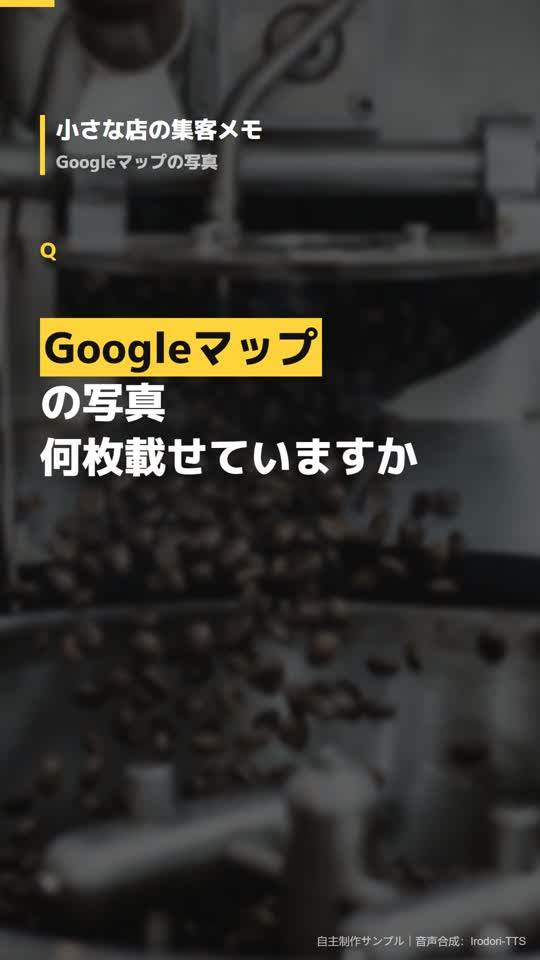

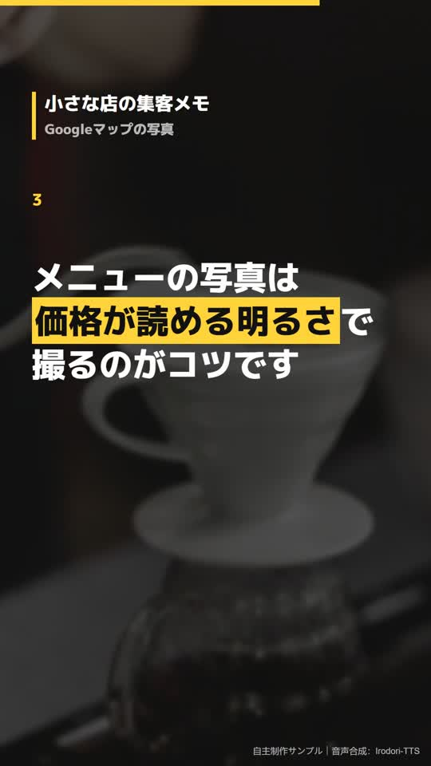
03エンタメ・クイズ（22秒）
目的
最後まで見てもらい、コメントを誘う
音声
ナレーションなし・BGMと効果音（ポン・緊張音・正解音）
カット
1カットのまま、出題・選択肢・3・2・1・正解・解説の5段階で画面の中身を変える
書体
Dela Gothic One（見出し）・Zen Maru Gothic Black（解説）
テロップの形
黒い吹き出しの問題文（76px）、白い札の選択肢（80px）。正解は緑の札に変わる
動き
選択肢が右から順に入る。正解の瞬間に画面が左右に揺れる
安全域
文字は上から170pxから1700pxに収める
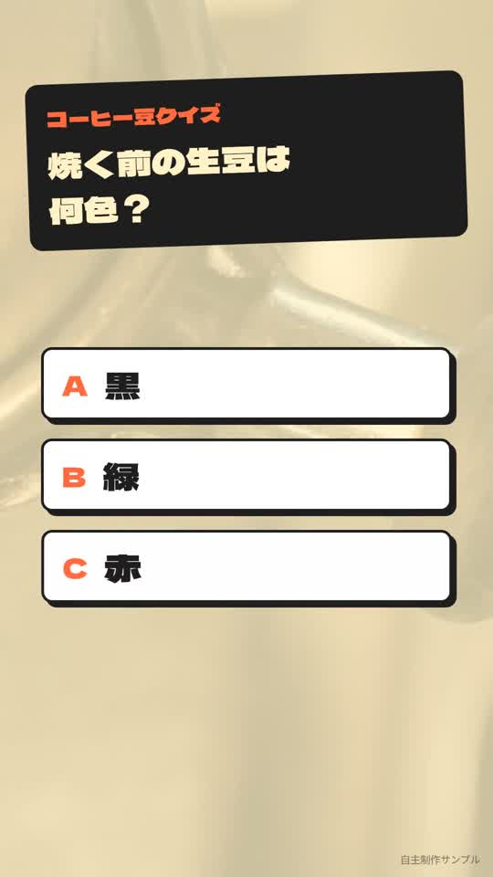

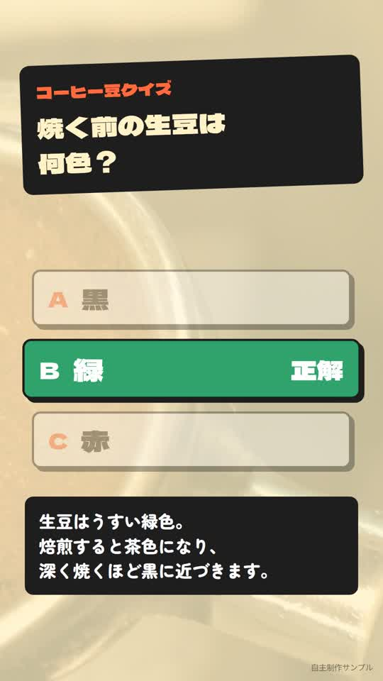
サムネイル（1本につき2案）
動画と一緒に納品するサムネイルです。6枚の一覧画像も用意しています。
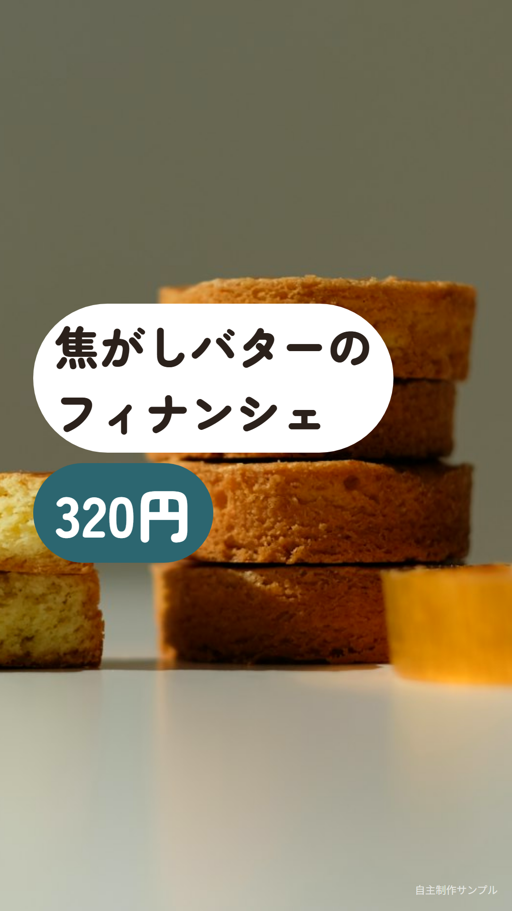
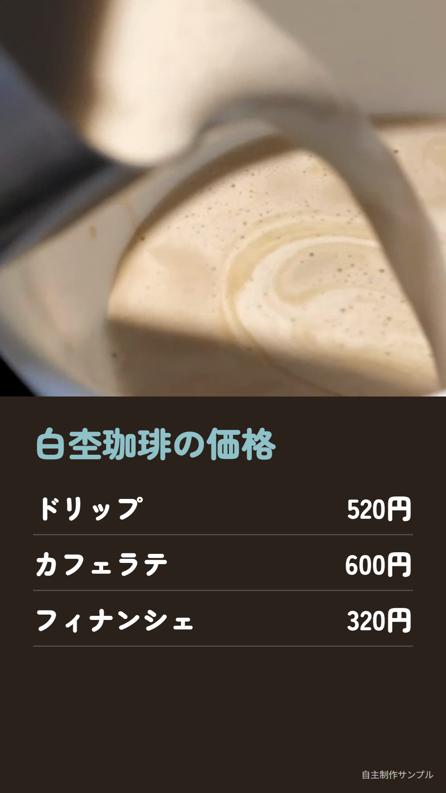
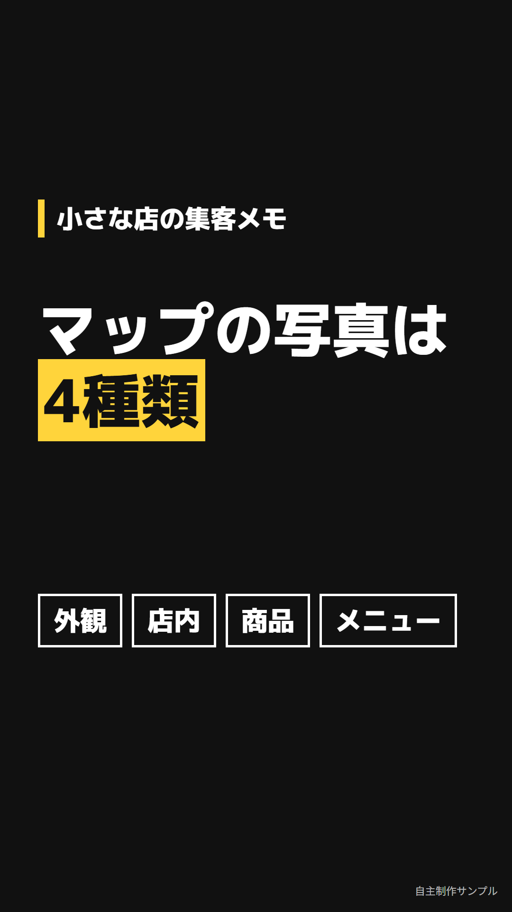
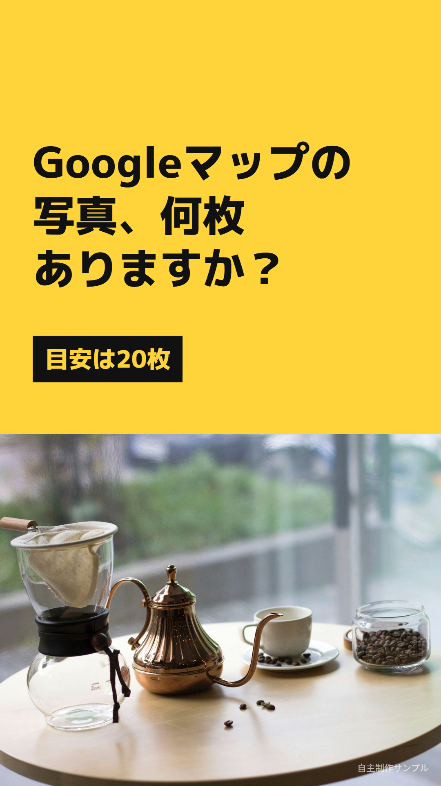
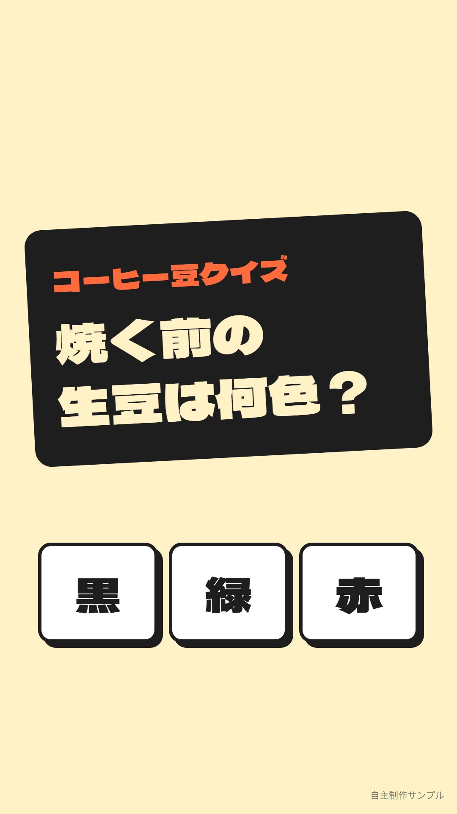
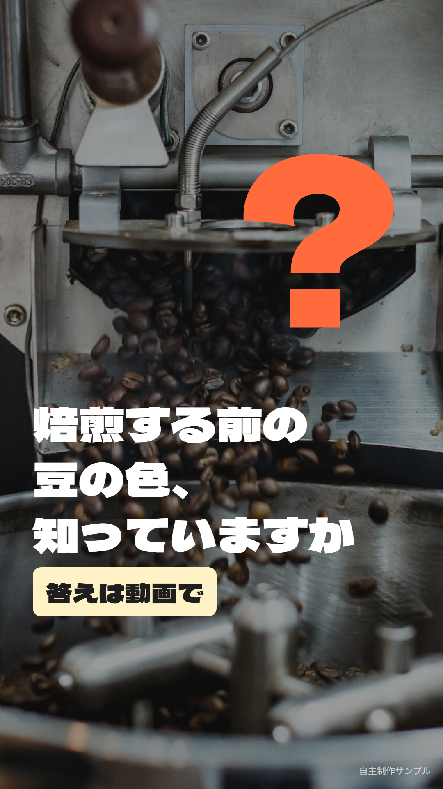